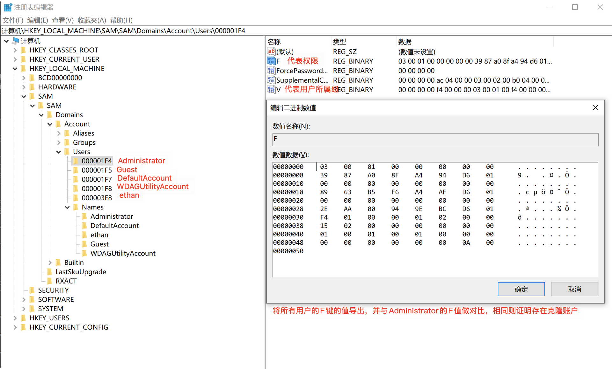
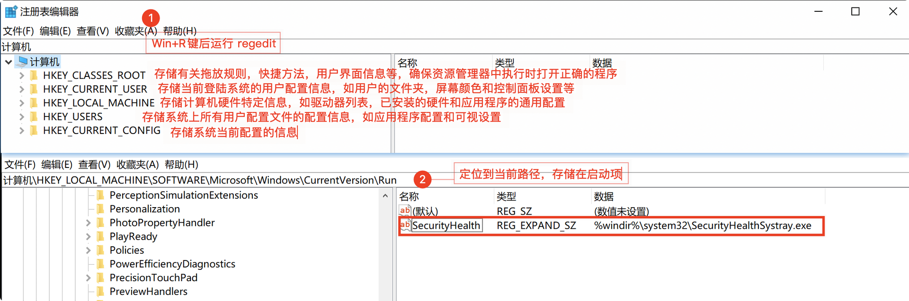
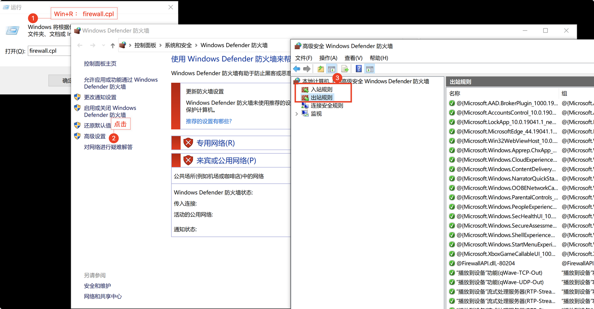
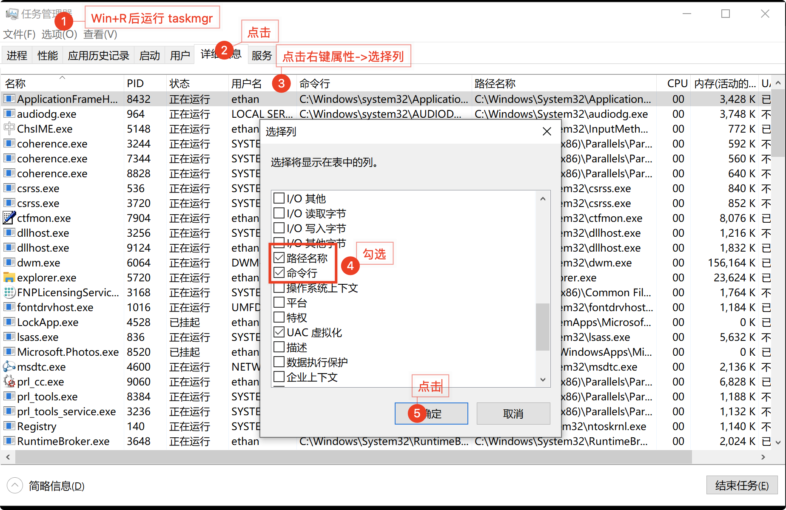
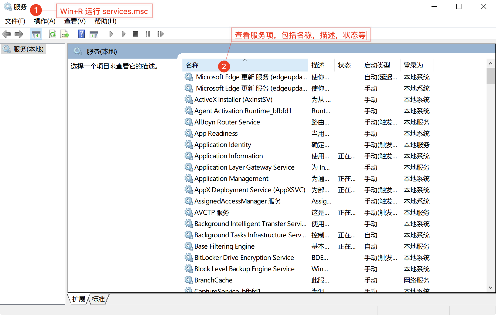
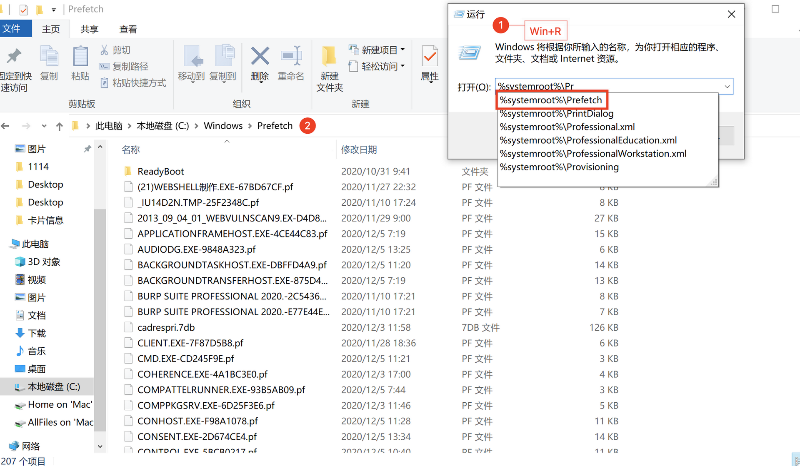

常用工具介绍
- SysinternalSuite
- PCHunter/火绒剑/PowerTool
- Process Monitor
- Event Log Explorer
- FullEventLogView
- Log Parser
- [WinPrefetch View]
- [WifiHistory View]
系统排查
系统基本信息
Windows
在搜索框中键入msinfo32 。
用鼠标右键单击搜索结果中的系统信息，然后选择以管理员身份运行。
Linux
lscpu # 查看CPU相关信息，包括型号、主频、内核等信息
uname -a # 查看当前操作系统信息
cat /proc/version #查看当前操作系统版本
lsmod # 查看所有已载入系统的模块信息系统用户信息
Windows
命令行查看
&rem 为cmd下的注释符
net user &rem 收集用户账户信息，但看不到以$结尾的隐藏账户 net user <username> &rem 查看指定用户的详细信息GUI查看
在cmd中输入compmgmt.msc即可调出计算机管理窗口
注册表查看
配置当用用户拥有对SAM的读取权限,配置后按F5刷新

在第3步选中账户给予：完全控制 亦可。

wmic查看
wmic是WMI(Widnwos Management Instrumentation)的扩展，
提供从命令行接口和批命令脚本执行系统管理命令wmic useraccount get name,sid &rem 获取系统中用户名和系统的SID值
Linux
cat /etc/passwd # 查看系统所有用户信息
awk -F: '{if($3==0)print $1}' /etc/passwd # 查看用户UID为0的账户，即root账户
awk -F:'length($2)==0{print $1}' /etc/shadow # 查看是否存在空口令账户
cat /etc/passwd | grep '/bin/bash' # 查看可登陆的用户
last # 查看显示近期用户或终端的登录情况
lastlog # 查看登陆过所有用户的最近一次登陆时间
lastb # 查看登陆失败的用户账户信息
who # 查看当前登陆系统的用户last -f 指定数据源,如下:
- /var/log/wtmp 存储登陆成功信息
- /var/log/btmp 存储登陆失败信息
- /var/log/utmp 存储当前正在登陆的信息
启动项
Windows
1. 通过【系统配置】对话框查看
2. 通过注册表查看路径：计算机\HKEY_LOCAL_MACHINE\SOFTWARE\Microsoft\Windows\CurrentVersion\Run

Linux
more /etc/init.d/rc.local /etc/rc.d/rc[0-6].d # 查看rc.local文件内容
ls -alt /etc/init.d/ # 查看init.d文件夹下所有文件的详细信息
任务计划
Windows
通过计算机管理窗口查询
通过powershell查询
通过cmd查询

Linux
crontab -u root -l # 查看root用户的计划任务
more /etc/cron*/ # 查看cron下的定时任务
cat /etc/anacrontab # 查看anacrontab中的任务其他
- Windows防火墙规则
netsh firewall show state
进程排查
Windows
通过【任务管理器查看】查看
添加【命令行】、【映射路径名称】列，获取更多信息

通过tasklist查看
tasklist &rem 查看所有进程的映像名称、服务、PID、会话名等信息
tasklist /svc &rem 查看进程映像名，PID，服务
tasklist /m &rem 查看所有进程加载的DLL文件
tasklist /m ntdll.dll &rem 查看调用指定ntdll.dll文件的进程使用netstat查看
netstat -anb | findstr "ESTABLISHED" &rem 查看端口连接情况及端口对应的程序，需要管理员权限
netstat -ano | findstr "ESTABLISHED" &rem 查看目前已建立的网络连接，可定位PID
tasklist | findstr <PID> &rem 定位具体的程序使用【PowerShell】查看
Get-WmiObject Win32_Process | select Name,ProcessId,ParentProcessId,Path # 获取进程名，进程ID，PID，路径使用【WMIC】查看
cmd下注释符 &rem PowerShell下注释符 #
wmic process get name,parentprocessid,processid,executablepath， commandline /format:csv &rem 获取进程名，PID，ID,执行路径,命令行
wmic process where processid=<PID> get name, executablepath &rem 获取指定PID的进程名和执行路径
wmic process where name="malware.exe" call terminate &rem 删除“malware.exe“恶意程序的进程
wmic process where processid=<PID> delete &rem 删除<PID>的进程Linux
netstat -antlp | more # 查看进程、端口连接情况，可定位PID
ls -alt /proc/<PID>/exe # 可查看PID对应可执行程序
lsof -p <PID> # 查看PID对应的进程打开的文件
ps -ef | awk '{print}' | sort -n | uniq >1 #查看隐藏进程
ls /proc | sort -n | uniq >2
diff 1 2服务排查
Windows

Linux
chkconfig --list # 查看系统运行的服务
service --status-all ｜ more # 查看所有服务的状态文件痕迹排查
Windows
敏感目录
- 各个盘下的Temp目录
C:\Windows\Temp\
- 浏览器历史记录，下载记录
- 用户Recent文件
C:\Documents and Settings\Administrator\Recent
C:\Documents and Settings\Default User\Recent - 预读取文件夹Prefetch
C:\Windows\Prefetch
%SystemRoot%\appcompat\Programs\ 查询Amcache.hve文件所在目录，可以查询用用程序的执行路径，上次执行的时间及SHA1值

时间点查找
forfiles /m *.exe /d +2020/12/05 /s /p C:\ /c "cmd /c echo @path @fdate @ftime " 2> null &rem 针对2020-12-5日后的exe新建文件进行搜索Webshell
可利用D盾、HwsKill、WebshellKill等工具对目录下的文件进行规则查询
Linux
敏感目录
- /usr/bin 和/usr/sbin
- .ssh/ 和/etc/ssh
- /tmp
时间点查找
find / -ctime 0 -name "*.sh" # 查找一天内新增的sh文件
ls -alt | head -n 10 # 列出最近修改的10个文件
stat <xx.sh> # 对xx.sh的创建、修改、访问时间进行排查特殊文件
- 常规检查
find / -type f -perm -04000 -ls -uid 0 2>/dev/null # 排查SUID程序 find /tmp -perm 777 | more # 查找777权限的文件 find /var/www/ -name "*.php" |xargs egrep 'assert|phpspy|c99sh|milw0rm|eval|\(gunerpress|\(base64_decoolcode|spider_bc|shell_exec|passthru|\(\$\_\POST\[|eval \(str_rot13|\.chr\(|\$\{\"\_P|eval\(\$\_R|file_put_contents\(\.\*\$\_|base64_decode' # 查找/var/www目录下的webshell ls -alt /bin # 对系统命令进行排查，查看命令目录中相关系统命令的修改时间 ls -alh /bin # 对系统命令进行排查，查看命令目录中相关系统命令的文件大小 - 后门查杀
- chkrootkit 检测rootkit是否被安装到系统中
chkroot -q | grep INFECTED - rkhunter 检测系统命令，包括MD5校验，本机敏感目录，系统配置，服务及套件，第三方应用版本等。
rkhunter --check
- chkrootkit 检测rootkit是否被安装到系统中
日志分析
内存分析
流量分析-Wireshark简单使用
威胁情报
转载请注明来源，欢迎对文章中的引用来源进行考证，欢迎指出任何有错误或不够清晰的表达。可以在下面评论区评论，也可以邮件至 askding@qq.com